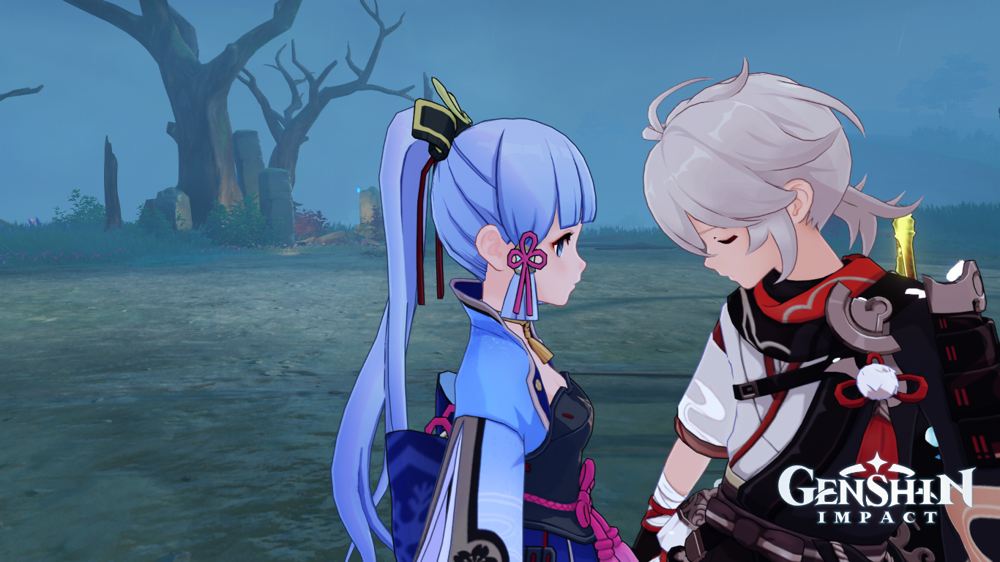
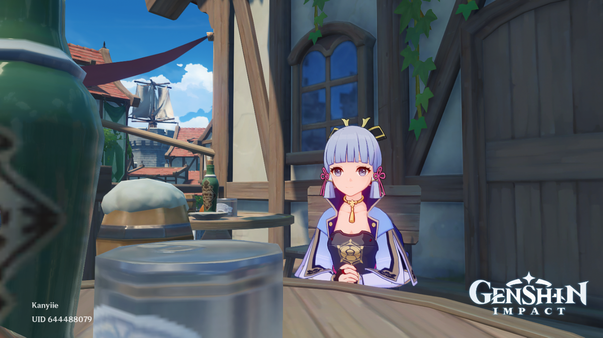

Maybe it's the way you say my name Maybe it's the way you play your game But it's so good, I've never known anybody like you But it's so good, I've never dreamed of nobody like you And I've heard of a love that comes once in a lifetime And I'm pretty sure that you are that love of mine 'Cause I'm in a field of dandelions Wishing on every one that you'll be mine, mine And I see forever in your eyes I feel okay when I see you smile, smile Wishing on dandelions all of the time Praying to God that one day you'll be mine Wishing on dandelions all of the time, all of the time I think that you are the one for me Cause it gets so hard to breathe When you're looking at me I've never felt so alive and free When you're looking at me I've never felt so happy And I've heard of a love that comes once in a lifetime And I'm pretty sure that you are that love of mine Cause I'm in a field of dandelions Wishing on every one that you'll be mine, mine And I see forever in your eyes I feel okay when I see you smile, smile Wishing on dandelions all of the time Praying to God that one day you'll be mine Wishing on dandelions all of the time, all of the time Dandelion, into the wind you go Won't you let my darling know? Dandelion, into the wind you go Won't you let my darling know that I'm in a field of dandelions Wishing on every one that you'll be mine, mine And I see forever in your eyes I feel okay when I see you smile, smile Wishing on dandelions all of the time Praying to God that one day you'll be mine Wishing on dandelions all of the time, all of the time I'm in a field of dandelions Wishing on every one that you'll be mine, mine
Eu não consigo viver sem a sua presença, você faz o meu dia, me faz me sentir como alguém importante, eu realmente sinto um enorme carinho por você. Sou tão grata por Deus ter fornecido a gigantesca presença sua em minha vida. Eu sou grata por tudo que você me ensinou e toda a maneira que você já me ensinou a pensar, eu amo o seu jeito bobo, eu amo ser boba por você, obrigada por estar de volta!
O seu cabelo cacheado, os seus olhos de peixe haha, os seus lábios, a sua clavicula definitivamente linda, seu abdomen marcado, a sua altura, as minhas mãos com dedos longos, o seu jeito de rir, o seu olhar, as suas brincadeiras inocentes ou não, a sua forma de pensar, o seu senso de justiça, O jeito que você me trata quando está com ciúmes, o seu modo de agir comigo quando não estou bem, o seu jeito protetor... Tudo, eu realmente amo tudo!
Você está solitário? Eu serei o único sonho que você procura, então se você estiver sozinho não precisa me mostrar. Se você estiver sozinho, venha ser sozinho comigo!
Clique aqui.Sabe o que é? Leva muito tempo na vida para perceber o quanto é infeliz, só depois que você desiste de tudo é que começa a achar um jeito de ser feliz;